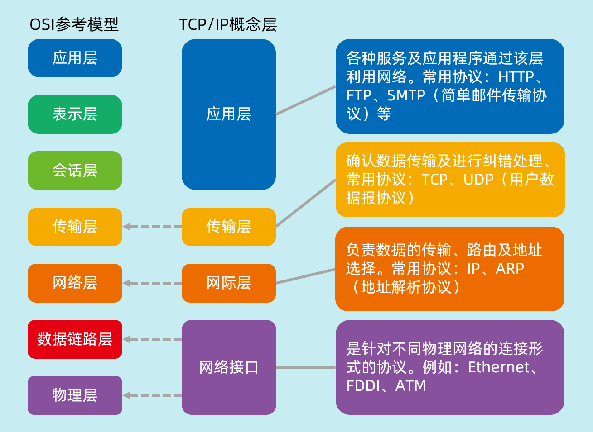

1.入门
1.1 基础知识
1.通信双方地址
- ip
- 端口号
- 192.168.45.33:8888
2.TCP/IP模型

3.网络通信要素
- IP和端口号
- 网络通信协议
1.2 CMD常用命令
1 | netstat -ano #查看所有的端口 |
1.3 IP
- ip地址：
InetAddress- 唯一定位一台网络上的计算机
- 本地：127.0.0.1:localhost
- ip地址分类：
- ipv4/ipv6：32位/128位
- 公网（互联网）- 私网（局域网）
InetAddress：用于处理 IP 地址和主机名之间的转换以及其他与 IP 地址相关的操作- 获取本地主机：使用
InetAddress.getLocalHost()方法可以获取本地主机的InetAddress实例 - 根据主机名获取 IP 地址：使用
InetAddress.getByName(String host)方法可以根据给定的主机名获取对应的InetAddress实例 - 获取主机名：使用
InetAddress.getHostName()方法可以获取InetAddress实例的主机名 - 获取 IP 地址字符串：使用
InetAddress.getHostAddress()方法可以获取InetAddress实例的 IP 地址字符串 - 检查可达性：使用
InetAddress.isReachable(int timeout)方法可以检查是否可以在指定的超时时间内到达该 IP 地址 - 判断是否为回环地址：使用
InetAddress.isLoopbackAddress()方法可以判断当前InetAddress实例是否为回环地址（如 127.0.0.1） - 判断是否为站点本地地址：使用
InetAddress.isSiteLocalAddress()方法可以判断当前InetAddress实例是否为站点本地地址（如 192.168.x.x、10.x.x.x 或 172.16.x.x - 172.31.x.x） - 判断是否为多播地址：使用
InetAddress.isMulticastAddress()方法可以判断当前InetAddress实例是否为多播地址 - 比较两个 InetAddress 实例：使用
InetAddress.equals(Object obj)方法可以比较两个InetAddress实例是否相等 - 获取 InetAddress 的哈希码：使用
InetAddress.hashCode()方法可以获取InetAddress实例的哈希码
- 获取本地主机：使用
1 | package com.yang.lesson1; |
1.4 端口
InetSocketAddress公有端口0~1023
- HTTP：80
- HTTPS: 443
- FTP：21
- Telnet: 23
程序注册端口: 1024~49151，分配用户或者程序
- Tomcat：8080
- MySQL：3306
- Oraclet：1521
动态
- 私有： 49152~ 65535
1 | import java.net.InetSocketAddress; |
1.5 通信协议
协议：约定
网络通信协议：速率，传输码率，代码结构，传输控制… …
TCP/IP协议：实际上是一组协议
- TCP：用户传输协议
- IP：网络互联协议
- UDP：用户数据报协议
TCP 对比 UDP
TCP
- 连接，稳定
- 三次握手连接，四次挥手释放连接
- 客户端，服务端
- 传输完成，释放连接，效率低
UDP
- 不连接，不稳定
- 客户端，服务端：没有明确的界限
2.实践
2.1 TCP聊天模式
客户端
- 1.连接服务器Socket
- 2.发送消息
1
2
3
4
5
6
7
8
9
10
11
12
13
14
15
16
17
18
19
20//客户端
import java.io.IOException;
import java.io.OutputStream;
import java.net.InetAddress;
import java.net.Socket;
public class TcpClientDemo1 {
public static void main(String[] args) throws IOException {
//1.要知道服务器的地址，端口号
InetAddress serverIp = InetAddress.getByName("127.0.0.1");
int port=9999;
//2.创建一个socket连接
Socket socket = new Socket(serverIp, port);
//3.发送消息，IO流
OutputStream outputStream = socket.getOutputStream();
outputStream.write("你好呀".getBytes());
outputStream.close();
socket.close();
}
}服务端
- 1.建立服务端的端口ServerSocket
- 2.等待用户的连接 accept
- 3.接收用户的消息
1
2
3
4
5
6
7
8
9
10
11
12
13
14
15
16
17
18
19
20
21
22
23
24
25
26
27
28
29
30
31//服务端
import java.io.ByteArrayOutputStream;
import java.io.IOException;
import java.io.InputStream;
import java.net.ServerSocket;
import java.net.Socket;
public class TcpServerDemo1 {
public static void main(String[] args) throws IOException {
//1.我有一个地址
ServerSocket serverSocket = new ServerSocket(9999);
//2.等待客户端连接过来
Socket socket = serverSocket.accept();
//3.读取客户端消息
InputStream inputStream = socket.getInputStream();
//管道流
ByteArrayOutputStream baos = new ByteArrayOutputStream();
int count=0;
byte[] c =new byte[1024];
while ((count=inputStream.read(c))!=-1){
baos.write(c,0,count);
}
System.out.println(baos.toString());
baos.close();
inputStream.close();
socket.close();
serverSocket.close();
}
}
2.2 TCP文件上传
1.服务端
1 | import java.io.*; |
2.客户端
1 | import java.io.*; |
2.3 Tomcat
- 服务端
- 自定义S
- Tomcat
- 客户端
- 自定义C
- 浏览器
2.4 UDP发送消息
DatagramPacketDatagramSocket
1.发送端
1 | import java.net.DatagramPacket; |
2.接收端
1 | import java.net.DatagramPacket; |
2.5 UDP聊天
1.发送端
1 | import java.io.BufferedReader; |
2.接收端
1 | import java.net.DatagramPacket; |
2.6 UDP多线程双向聊天
1.学生线程
1 | import java.io.BufferedReader; |
2.老师线程
1 | import java.io.IOException; |
3.学生端启动线程
1 | public class TalkStudent { |
4.老师端启动线程：
1 | public class TalkTeacher { |
2.7 URL统一资源定位符
- 协议：//ip地址：端口号/项目名/资源
1 | public class URLDemo1 { |
- 结果
1 | http |
- 下载网络资源
1 | import java.io.FileOutputStream; |